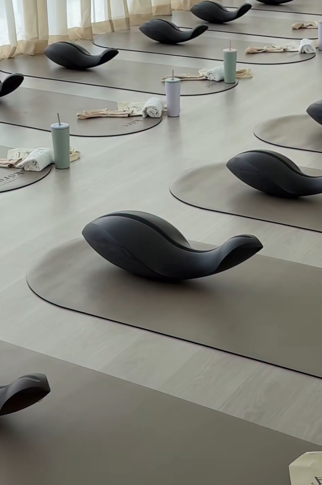

The Journal
Lifestyle and wellness, in one place.

Latest · Lifestyle · Mental Wellness
A Moment to Reflect
If you are anything like me, setting goals for each year is a huge motivator.
Read the postAll posts
More from the Journal
 Pilates · Wellness
Pilates · WellnessMyofascial Release: A Holistic Approach to Movement
November 10, 2025As a movement professional, I’m always looking for ways to provide a more comprehensive and holistic experience for my clients.
 Lifestyle
Lifestyle28 Things I Have Learned in 28 Years
November 3, 2025In honor of turning 28, I’m sharing a list of 28 things I have learned.
 Pilates · Lifestyle
Pilates · LifestyleThe Truth About Being a Pilates Teacher
October 1, 2025Whether you teach Pilates as a side gig outside of your 9-to-5 or you’re teaching full-time, I think we can all agree on one thing: it is one of the most rewarding, yet most challenging things you can choose to do.

Pilates · WellnessThe Oov: A Revolutionary Tool
September 29, 2025I am absolutely fascinated by the Oov! It’s one of the most unique and innovative tools I’ve incorporated into my practice.
 Pilates · Wellness
Pilates · WellnessThe Pelvic Floor: The Foundation of Your Core
September 23, 2025Just as the Transverse Abdominis (TrA) provides horizontal support for your core, the pelvic floor muscles give us that critical foundation from below.
Ready to get started?
Join the waitlist.
Be the first to know when a private spot opens. For workshops & events, email taylor@livinglundin.com.
Join now